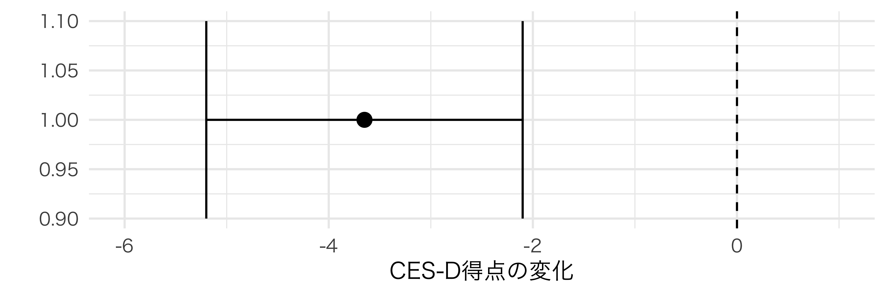
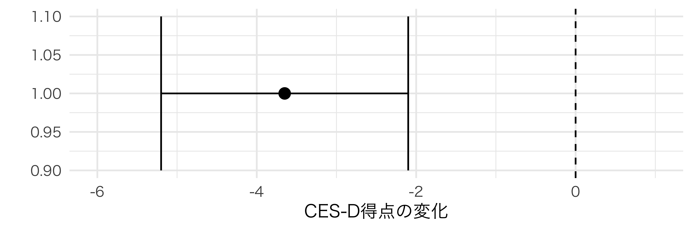
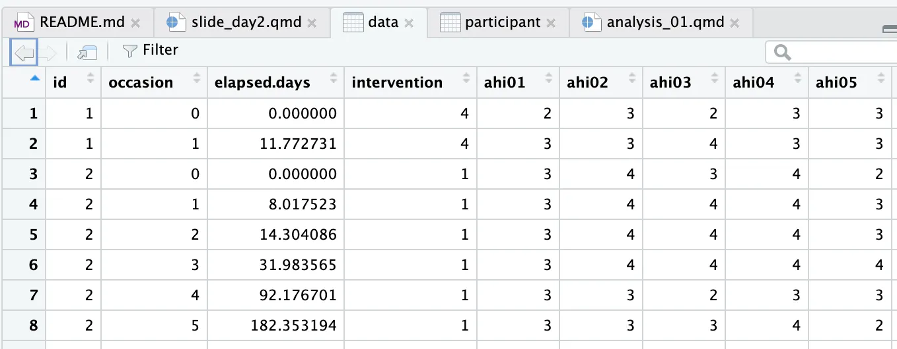
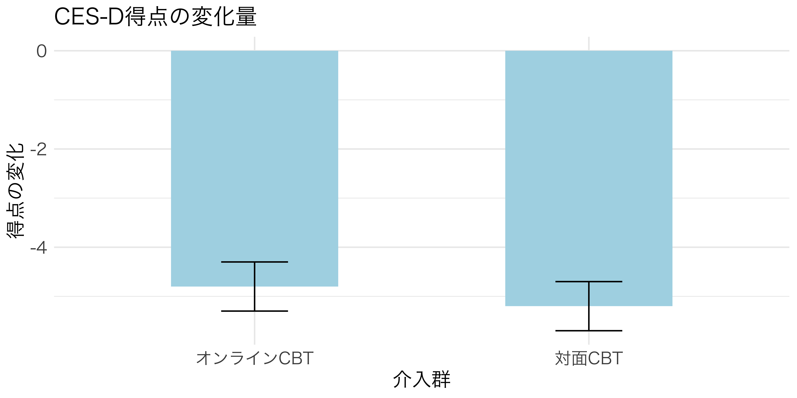
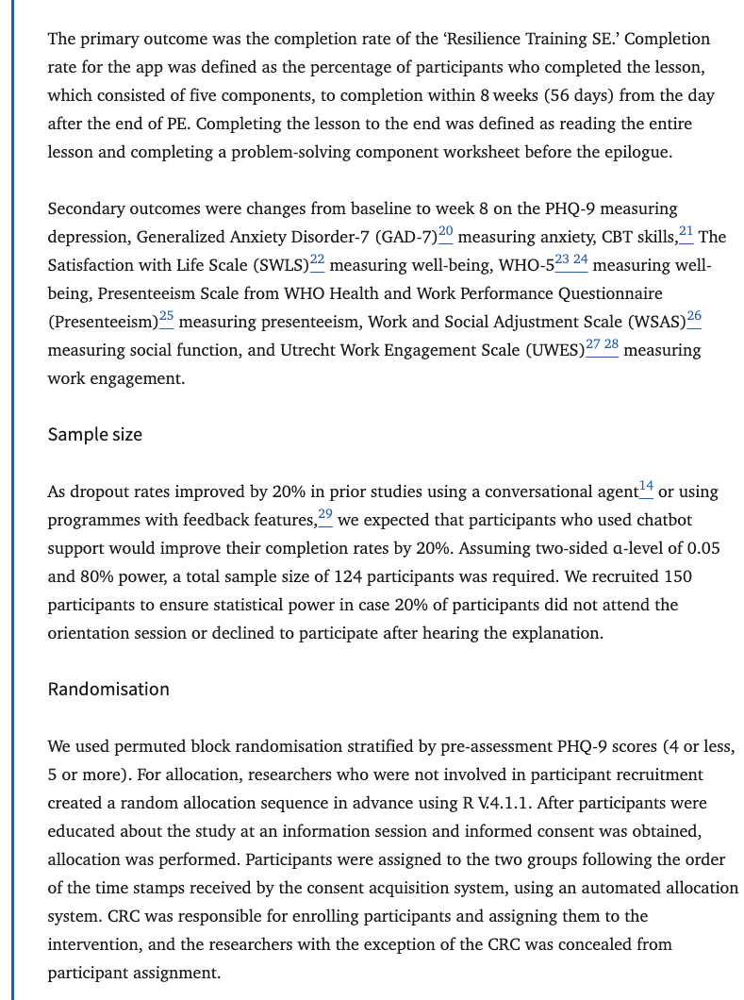

2025-01-16
資料作成方法：Quarto + RMarkdown
身近な疑問から統計的推論へ
例：「睡眠時間と集中力って，本当に相関があるのかな？」
例：「朝食を食べる習慣は，学力に影響するんだろうか？」
主観的な判断からデータによる判断へ
得られたデータから母数を推定する
| 項目 | 最尤法 (MLE) | 最小二乗法 (LSM) |
|---|---|---|
| 推定方法 | データの生起確率を最大化する母数を求める | 残差の二乗和を最小化する値を求める |
| 分布の仮定 | 必要 | 不要な場合が多い |
| 計算の複雑さ | 複雑になる場合がある | 比較的単純 |
| 適用例 | コイン投げ，ポアソン分布に従うデータなど | 線形回帰分析，多項式回帰分析など |
| 類似点 | 状況によっては同じ結果を与える | |
| 相違点 | 分布の仮定が必要，計算が複雑になる場合がある | 分布の仮定が不要な場合が多い，計算が比較的単純 |
抑うつ症状（CES-D）の変化量
95%信頼区間: [-5.2, -2.1]

:::
実際のデータを使って仮説検定を行う
dataフォルダ内
以下の変数がある：
「幸福感と抑うつは，どの程度の負の相関を示すのだろうか？」
baseline_data <- subset(ahi_cesd, occasion == 0) # ベースライン（occasion = 0）のデータのみを抽出
baseline_scores <- baseline_data[, c("ahiTotal", "cesdTotal")] # 分析に必要な変数（AHIとCES-Dの得点）のみを選択
# 95%信頼区間
correlation_result_95 <- cor.test(# 結果をオブジェクトとして格納
x = baseline_scores$ahiTotal, # 幸福感得点
y = baseline_scores$cesdTotal, # 抑うつ得点
method = "pearson", # ピアソンの相関係数を使用
alternative = "two.sided")
# 99%信頼区間
correlation_result_99 <- cor.test( # 結果をオブジェクトとして格納
x = baseline_scores$ahiTotal, # 幸福感得点
y = baseline_scores$cesdTotal, # 抑うつ得点
method = "pearson", # ピアソンの相関係数を使用
alternative = "two.sided",
conf.level = 0.99)
Pearson's product-moment correlation
data: baseline_scores$ahiTotal and baseline_scores$cesdTotal
t = -18.042, df = 293, p-value < 2.2e-16
alternative hypothesis: true correlation is not equal to 0
95 percent confidence interval:
-0.7754145 -0.6664727
sample estimates:
cor
-0.7254563
Pearson's product-moment correlation
data: baseline_scores$ahiTotal and baseline_scores$cesdTotal
t = -18.042, df = 293, p-value < 2.2e-16
alternative hypothesis: true correlation is not equal to 0
99 percent confidence interval:
-0.7893886 -0.6459568
sample estimates:
cor
-0.7254563 print関数では，結果の表示ができる
# 相関係数だけ表示
correlation_result_95$estimate
# p値だけ表示
correlation_result_95$p.value
# 信頼区間だけ表示
correlation_result_95$conf.intggplot() +
geom_point() +
geom_smooth(method = "lm") +
ggtitle(paste("相関係数:",
round(correlation_result_95$estimate, 3)))オブジェクトに格納することで，分析結果を効率的に管理・活用できる
相関係数は r = -.73 であり，強い負の相関が見られた
「e」は「10の何乗」を意味し，「-16」は「10を16回小さい方に掛ける」という意味
n_sims <- 1000 # シミュレーション回数を定義
sample_size <- 30 # サンプルサイズ
true_cor <- cor(baseline_data$ahiTotal, baseline_data$cesdTotal) # 母相関係数
# 結果格納用のデータフレーム作成
results <- data.frame(
sim_number = 1:n_sims,
estimate = numeric(n_sims),
ci_lower = numeric(n_sims),
ci_upper = numeric(n_sims),
contains_true = logical(n_sims)
)
set.seed(123) # 再現性のために乱数シードを固定
for(i in 1:n_sims) {
# 無作為抽出とデータ分析
sample_data <- baseline_data[sample(1:nrow(baseline_data),
sample_size, replace = TRUE), ]
test_result <- cor.test(sample_data$ahiTotal, sample_data$cesdTotal)
# 結果の記録
results[i, 2:5] <- c(test_result$estimate,
test_result$conf.int,
between(true_cor, test_result$conf.int[1],
test_result$conf.int[2]))
}統計的仮説検定
HARKing: Hypothesizing After the Results are Known
有意差が出るまで繰り返す臨床試験サポートサービス
オンラインCBTの効果検証（対面CBTより優れているという仮説）
主要評価項目：CES-D得点の変化量
結果が期待通りでなかった場合…

実際の研究では両側検定を用いることが多い
研究開始前に登録する内容
透明性が高まる理由
事前登録されてるだけで信頼性が上がる
UMIN臨床試験登録システムでの登録例（UMIN000047621）
検出力は検定力とも呼ばれるがこの資料では検出力で統一する
Neyman & Pearson (1933) に基づく統計的仮説検定の枠組み
4つの要素のうち3つを固定すると，残り1つが決定される

サンプルサイズの設計
library(pwr)# 要インストール
power_analysis <- pwr.r.test( # 相関検定における検出力分析の関数
r = 0.73, # 演習1での効果量
power = 0.80, # 目標とする検出力
sig.level = 0.05,# 有意水準
alternative = "two.sided" # 両側検定
)
print(power_analysis) # 結果の表示
approximate correlation power calculation (arctangh transformation)
n = 11.51337
r = 0.73
sig.level = 0.05
power = 0.8
alternative = two.sided4つの要素のうち3つを固定すると，残り1つが決定される
８割で有意な相関が検出できるはず
シミュレーションによる検証で理論値の妥当性を確認
num_simulations <- 10000 # シミュレーション回数
sample_size <- 12 # サンプルサイズ
significant_results <- 0 # 有意な結果のカウンター
# シミュレーションの実行
set.seed(2025) # 再現性のために乱数シードを設定
for(i in 1:num_simulations) {
# 12名をランダムに抽出
sample_indices <- sample(nrow(baseline_data), sample_size)
sample_data <- baseline_data[sample_indices, ]
# 相関分析の実行
test_result <- cor.test(
sample_data$ahiTotal,
sample_data$cesdTotal,
method = "pearson"
)
# 有意な結果（p < .05）をカウント
if(test_result$p.value < 0.05) {
significant_results <- significant_results + 1
}
}
# 検出力（有意な結果の割合）の計算
empirical_power <- significant_results / num_simulations
print(paste("シミュレーションによる検出力:",
round(empirical_power, 3))) # 小数点以下3桁で丸めて表示[1] "シミュレーションによる検出力: 0.868"時点別の相関分析と検出力分析
以下の各時点で95%と99%の信頼区間を算出：
ベースライン時の分析（r = -.73）のコードを参考にしてください
お疲れ様でした